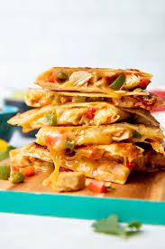

Chicken Quesodillas
Ingredients

- 2 boneless, skinless chicen breasts, cooked and shredded
- 1 cup shredded cheese (your choice which)
- 1/2 cup diced bell peppers
- 1/2 cup diced onions
- 1/4 cup fresh chopped cilantro
- 1/4 cup diced tomatoes
- 1 tsp ground cumin
- 1 tsp chili powder
- salt and pepper
- 8 small flour tortillas
Instructions
- Preheat your quesadilla maker
- In a bowl, combine the shredded chicken, shredded cheese, diced bell peppers, diced onions, chopped cilantro, diced tomatoes, ground cumin, chili powder,
salt, and pepper. Mix well to ensure the ingredients are evenly distributed.
- Take a flour tortilla and place a generous amount of the chicken and cheese mixture on one half of the tortilla, leaving a small border around the edges.
- Fold the other half of the tortilla over the filling to create a half-moon shape.
- Carefully place the filled tortilla onto the preheated quesadilla maker and close the lid. Cook for approximately 3-5 minutes or until the tortilla becomes
golden brown and crispy.
- Repeat steps 3-5 for the remaining tortillas and filling.
- Once all the quesadillas are cooked, remove them from the quesadilla maker and let them cool slightly before serving.
- Serve the chicken quesadillas with your favorite accompaniments, such as sour cream, guacamole, or salsa.
[Back to Dinners]
[Home]